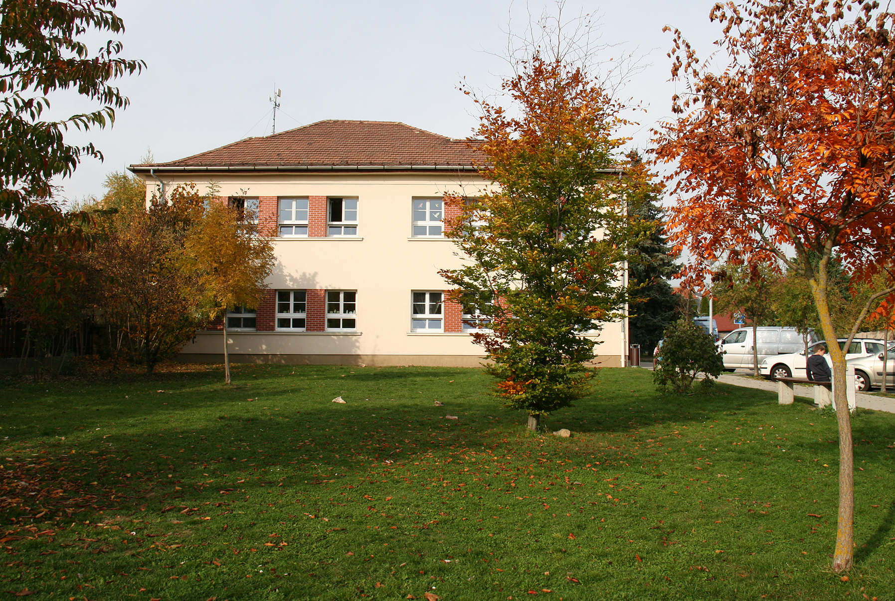

Zgyerka Máté vagyok, 15 éves, a BMSZC Neumann János Számítástechnikai Szakgimnázium 9.C osztályos tanulója. Célom, hogy programozóként és szoftver fejlasztőként végezzem el az iskolát, de az IT is érdekel.
Programozást, Weboldal szerkesztést a kedvenceim közé tartoznak, de IT Infirmatika és Közismereti Informatikát is szeretem.
Az előbb említett tárgyak tananygai:
Nagykovácsiban élek, a Nagykovácsi Általános Iskolában tanultam. Amióta informatika óra van én azóta informatikus szeretnék lenni.
8 évig fociztam, 2 éve kézilabdázom verseny szerüen.
Versenyeztünk rengeteget, de soha nem ugy tekintettünk rá, mint egy verseny, hanem gyakorlás. Ezektől függetlenül igen jó helyezéseket értünk el, de volt olyan amikor sajos vesztetünk.
Az osztályommaol diákolimpián vettünk resz, némeiken megyei bajnokok letünnk.
Készítette: Zgyerka Máté 9.C